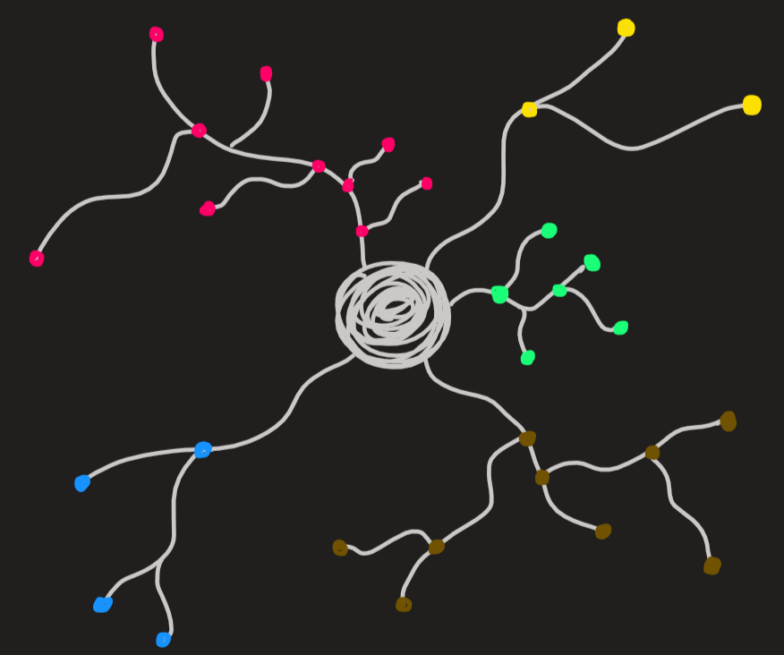

I.4
A consciência suprema, purusottama, é o núcleo do universo.
TLDR: Enquanto prakrti actua no oceano de consciência tanto na fase de saincara ou pratisaincara gera uma enorme teia de ligação entre subsistemas, que observamos como a realidade física e conceptual. Durante todo o processo evolutivo há algo que se mantém invariante no tempo - a Consciência Suprema - a que o autor chama de núcleo (conceptual) do universo.
Resumo + Comentários:
Tudo no universo (incluindo a nossa mente) pode ser descrito por sistemas e subsistemas. Para identificar um sistema temos de identificar uma fronteira, física ou conceptual, que separa o sistema, de tudo o resto (que em si é outro sistema).
Ao conjunto de sistemas e das leis que os descrevem é aquilo a que autor chama de estrutura do universo (ou da natureza).
O autor segue então para a enumeração de várias suposições.
Suposição 1: Um sistema (físico ou conceptual) apresenta sempre um núcleo.
Suposição 2: o universo tem origem inteligente.
Isto tem um implicação muito importante, pois se é inteligente, é que esperar que exista uma estrutura sob todo o universo.
Suposição 3: O universo - oceano com ondas - evolui ao longo do tempo devido à força Shakti (prakrti). O estado dessas ondas reflecte as características da força que as originou, essas características são três, as três gunas. Cada onda reflecte assim uma certa combinação de três gunas. Portanto, cada onda é distinguível das demais e dizemos por isso que existe um principio de dualidade, entenda-se, um principio de que os objectos da consciências (ondas) são distinguíveis. O autor refere-se que há uma “Lei de Dualidade” a actuar sobre o universo (criação), o que se entende por isto é que existe um força (shakti/prakrti) que consegue formar ondas (conceptuais ou físicas) que nós conseguimos distinguir.
Suposição 4: A nossa mente apenas consegue entender as partes do universo (conceptual ou físico) que têm estrutura, i.e., que resultam da actuação da Lei de Dualidade. Mais ainda, também apenas entendemos as partes que têm um centro.
Definição: O que é esta ideia de centro?
A seguinte figura dá-nos a ideia:

Um sistema de conceitos ou um sistema físico tem sempre uma estrutura que se assemelha a esta figura, que resulta da acção de prakrti sobre purusa. Os pontos representam ideias ou subsistemas físicos, enquanto os ramos representam uma certa relação entre ambos.
Exemplos de centros:
- O centro de uma história é o moral da história.
- A terra gira em torno do sol, o centro é o sol.
- A família é o centro das nossas relações sociais.
- Os pensamentos e emoções que temos têm uma estrutura centrada na nossa memória (karma), o seu centro.
- uma pintura (quadro) tem o seu centro também, que tanto pode ser explicito ou implícito (conceptual)
Definição: Todos os sistemas que conseguimos identificar fazem parte de um Mega Sistema a que chamamos de:
sistema supremo
sistema cosmológico
brahmacakra (AM)
O autor introduz também a seguinte ideia:
ProposiçãoA evolução temporal do sistema cosmológico é de tal forma que satisfaz uma alternância (cíclica) entre saincara e pratisaincara.
Definição: O ponto fixo da dinâmica do sistema é o mar de consciência testemunhal a que o autor chama também paramashiva, purusottama, consciência nuclear.
O autor refere também que o universo físico não tem centro físico, mas tem um centro conceptual, que é o individuo (jiivatma). Esta ideia é um pouco confusa na minha opinião, porque o individuo, que entendo como sendo o corpo físico, muda no tempo e portanto não está fixo.
O autor introduz vários tipos de consciência, que na verdade são apenas rótulos úteis para distinguir diferentes pontos vista sobre a Consciência (aka oceano de Consciência) que é único. Assim no texto encontramos:
consciência = refere-se à definição intuitiva de consciência (não a um oceano).
Consciência testemunhal = é imutável e “observa” os objectos da consciência. É também designada por paramashiva ou purusottama
Consciência nuclear = refere-se à parte do oceano que é imutável. Por isso esta designação é equivalente à Consciência testemunhal.
Consciência Suprema = é equivalente a Consciência, o que por sua vez se refere à [Consciência testemunhal] + [objectos da consciência].
objectos da consciência são a parte mutável da Consciência (as ondas).
Saincara pode ser visto como outward flow e pratisaincara como inward flow dos objectos da consciência em direcção ao núcleo de consciência tal como vemos na figura: